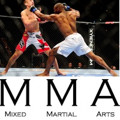
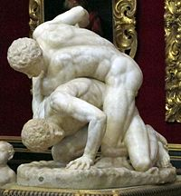
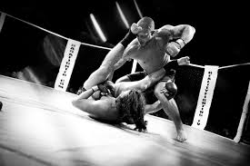

Las Artes Marciales Mixtas (MMA, por sus siglas en inglés) son un deporte de combate que combina diversas disciplinas marciales, como el Jiu-Jitsu, Muay Thai, Boxeo, y más.
Las MMA tienen sus raíces en antiguas tradiciones de lucha, pero se popularizaron en los Estados Unidos en la década de 1990 con el surgimiento de eventos como el UFC.
Las reglas de las MMA varían según la organización, pero generalmente incluyen prohibiciones de golpes ilegales y medidas de seguridad para los atletas.
